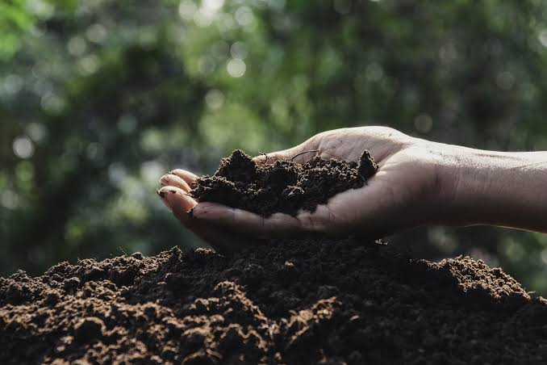
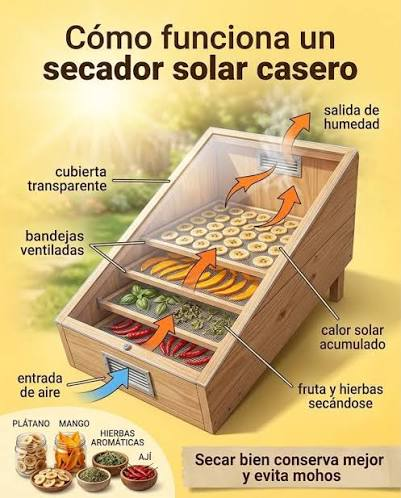
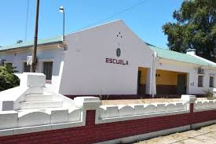

Innovación local para construir una comunidad más sostenible, resiliente y comprometida con el cuidado del ambiente.
Conocer el proyectoLa Ecoestación Climática Comunitaria es un espacio pensado para promover el cuidado del ambiente mediante la educación, la gestión responsable de los residuos y la participación activa de toda la comunidad.
Nuestro objetivo es reducir el impacto ambiental, fomentar hábitos sostenibles y generar conciencia sobre el cambio climático mediante acciones concretas realizadas por estudiantes, docentes y vecinos.
Una correcta separación de los residuos permite reciclar, reducir la contaminación y aprovechar mejor los recursos.
Restos de alimentos, hojas, césped y otros materiales biodegradables que pueden convertirse en compost.
Papel, cartón, plástico, vidrio y metales que pueden reciclarse.
Residuos que no pueden recuperarse mediante procesos de reciclaje.

El compostaje permite aprovechar los residuos orgánicos para obtener un abono natural rico en nutrientes que mejora la calidad del suelo y favorece el crecimiento de las plantas.
Con esta práctica disminuye la cantidad de residuos enviados al basural, se reduce la contaminación y se promueve una economía circular dentro de la comunidad.
El secadero solar utiliza la energía solar para deshidratar frutas, verduras, hierbas y otros alimentos sin consumir electricidad.
Esta tecnología es económica, sustentable y permite conservar alimentos durante más tiempo, reduciendo desperdicios y aprovechando los recursos naturales disponibles.

Nuestra escuela impulsa proyectos que promueven el cuidado del ambiente, la participación ciudadana y el compromiso con el desarrollo sostenible.
La Ecoestación Climática Comunitaria busca que estudiantes, docentes, familias y vecinos trabajen juntos para construir una comunidad más resiliente frente al cambio climático.

Si deseas conocer más sobre este proyecto o comunicarte con nuestra institución, puedes hacerlo a través de la siguiente información.
Escuela: E.E.S.O. N° 698 "Ing. Miguel Lifschitz"
Localidad: Las Tunas, Santa Fe, Argentina
Proyecto: Ecoestación Climática Comunitaria